THE FULL
PICTURE
From the seabed to the school room, each programme is a thread in the same fabric — a coastal community that thrives because its ocean does.
Coral Restoration
15,000+ colonies planted since 2019. Community divers trained as reef gardeners in partnership with Coral Guardian.
Learn More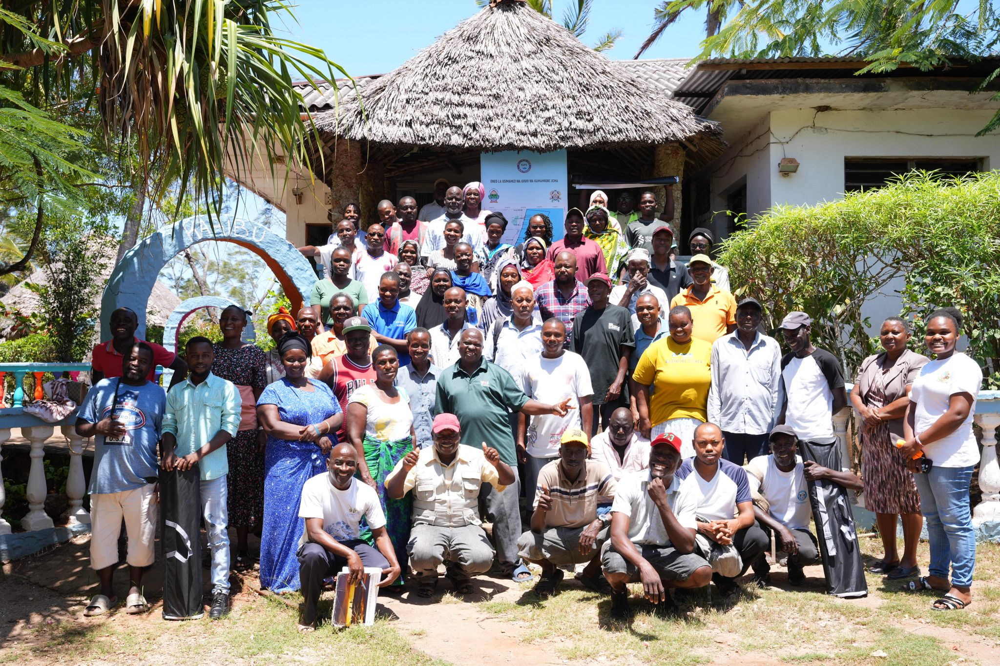
Community Co-Management (LMMA)
Kenya's first LMMA. 120 km² under a formal management plan signed 2022, placing communities at the centre of marine governance.
Learn More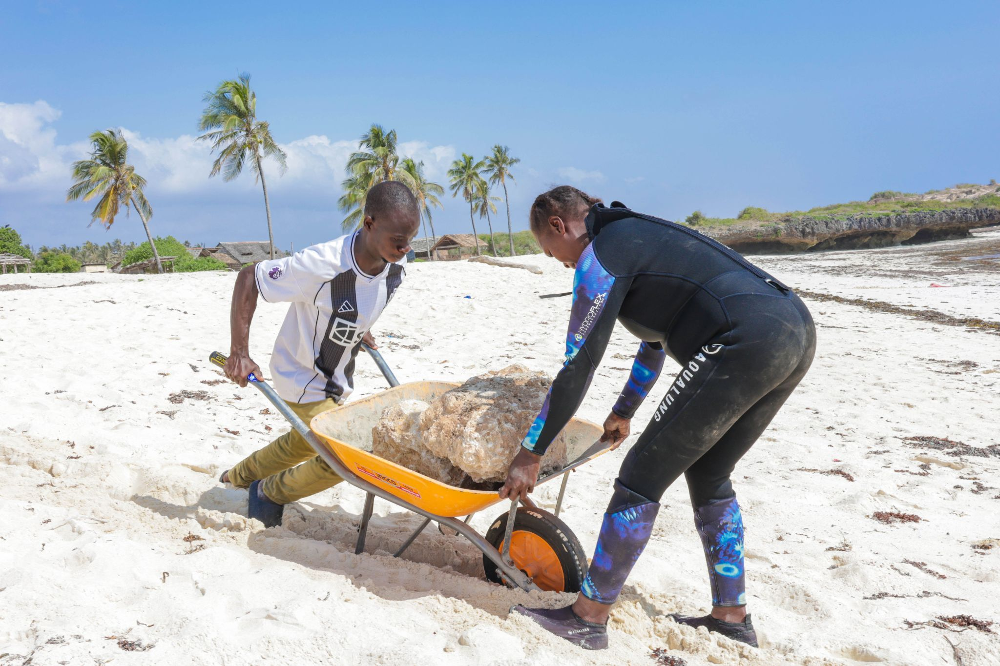
Project REEL Kilifi
Canon CENA and Athlete Media Group partnership. World-class photography and film documenting conservation work along the Kilifi coast.
Learn More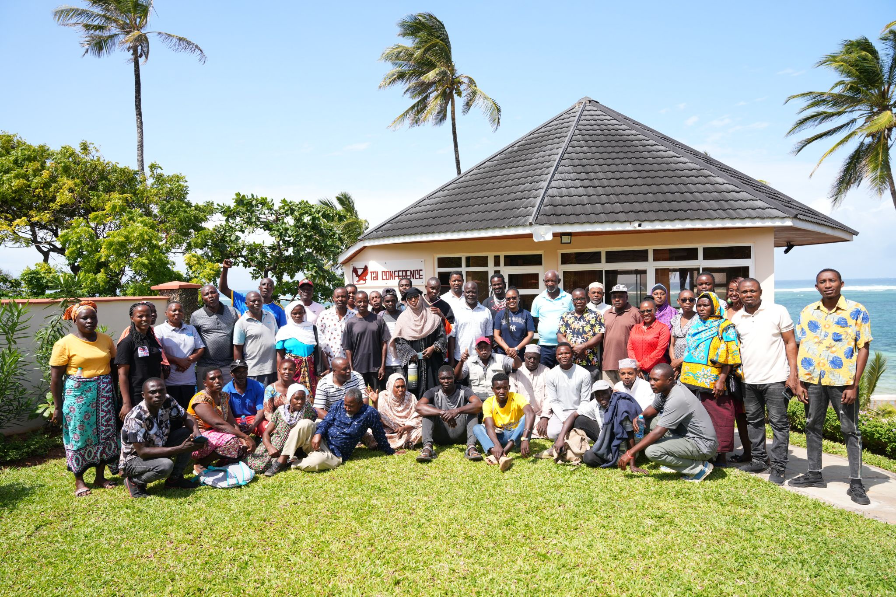
UK-Funded Biodiversity Programme
UK Government FCDO-funded initiative building institutional capacity across coastal management systems. Strengthening the people and structures that protect Kenya's marine environment for the long term.
Learn More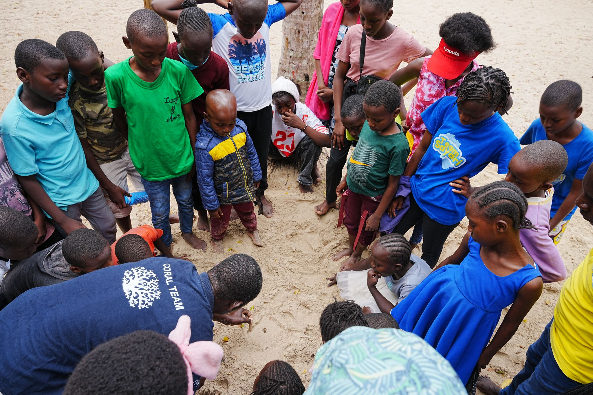
Ocean Education & Youth
School programmes, internships and youth engagement. The tengefu as a living classroom, growing the next generation of coastal stewards.
Learn More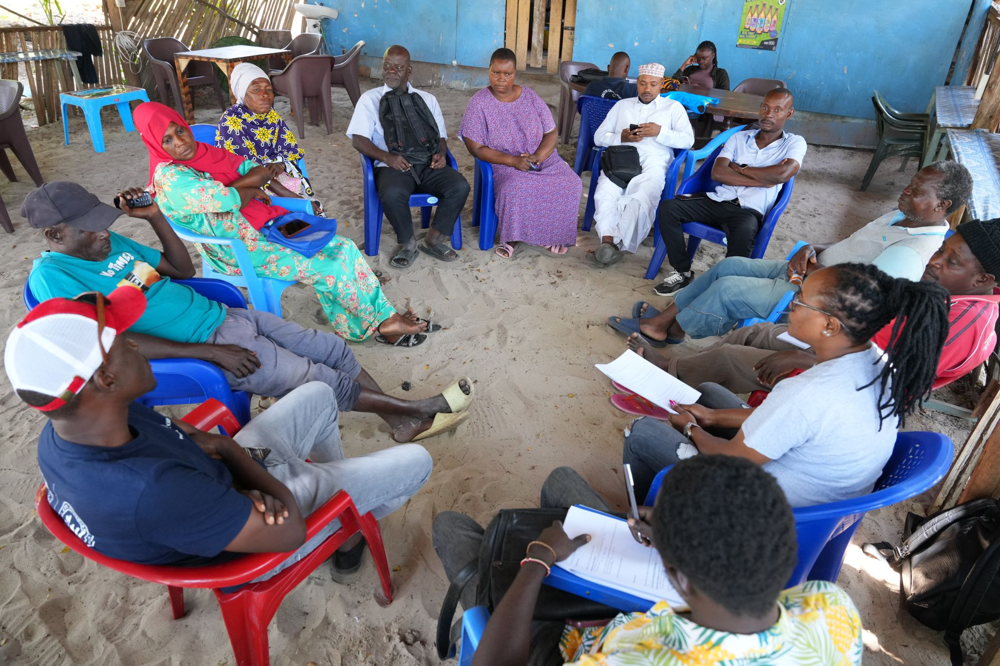
Kilifi BMU Network
Connecting all Beach Management Units across Kilifi County. Ensuring fishers' voices reach decision-makers at county and national level.
Learn More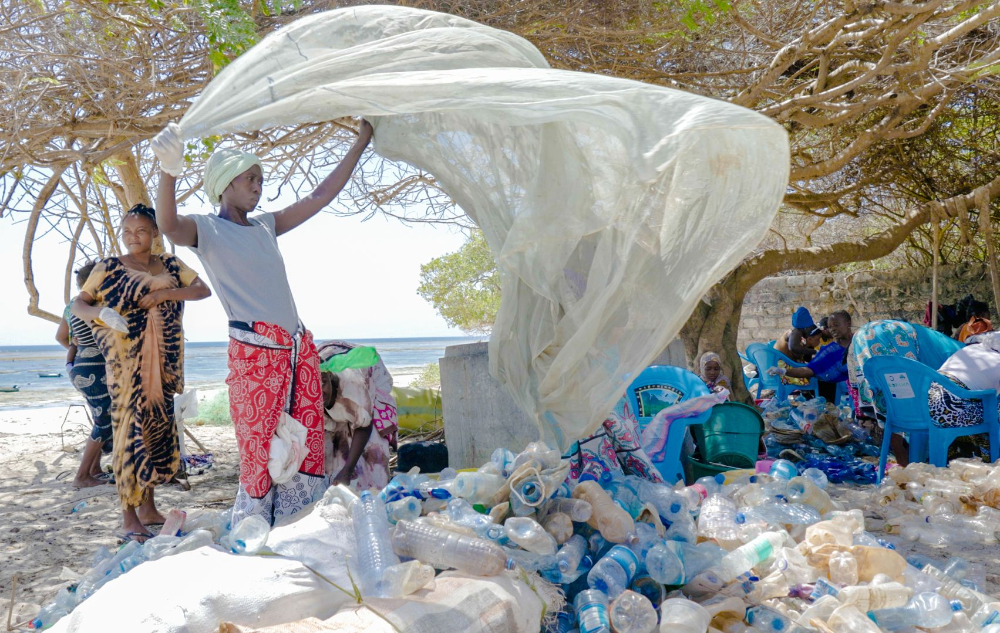
Trash4Cash
Women's groups collect and sort plastic waste, selling to certified recyclers. Turning ocean pollution into household income and clean coastlines.
Learn More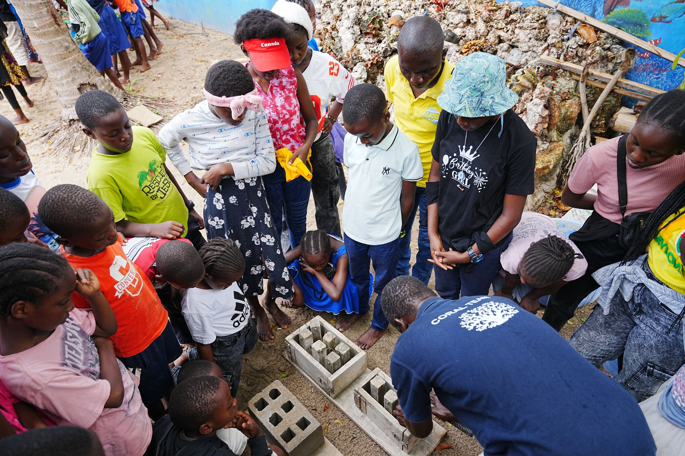
Turtle Protection
Monitoring and protecting sea turtle nesting habitats along the Kilifi coast. Community rangers record nesting events and prevent poaching year-round.
Learn More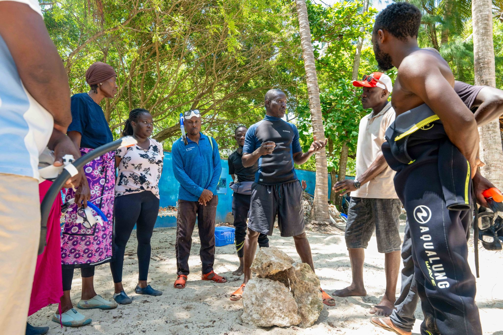
Marine Governance & Policy
Translating community-collected data into national marine policy frameworks. OAF presented findings at IUCN 2025, placing Kilifi's model on the global conservation stage.
Learn More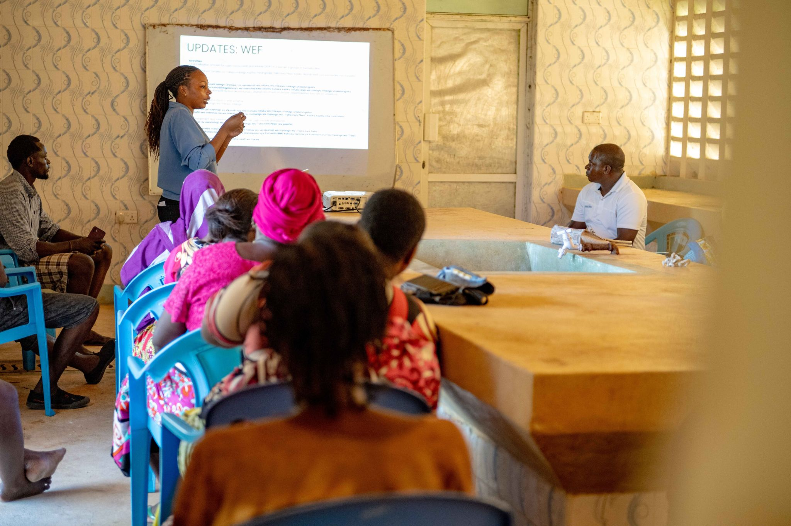
LIFT Network
Women's livelihoods, financial independence and eco-entrepreneurship. Building resilient coastal communities from the ground up through women's economic agency.
Learn More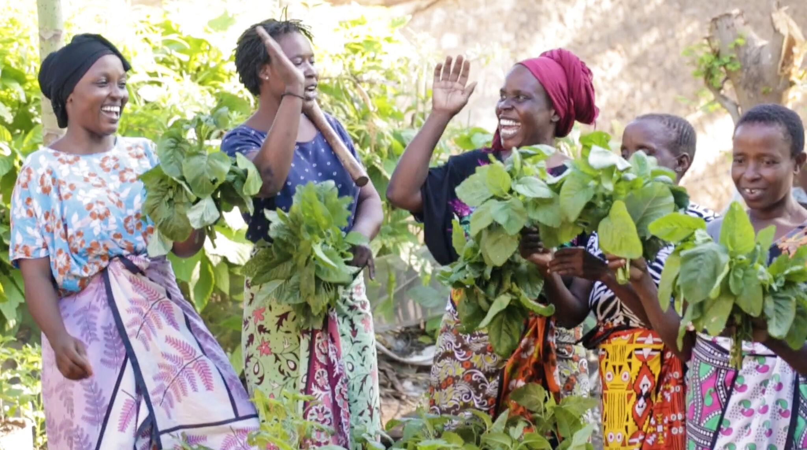
Kitchen Gardens & Food Security
Climate-smart gardens for coastal fishing families. Reducing dependence on overexploited fish stocks while strengthening household nutrition and resilience.
Learn More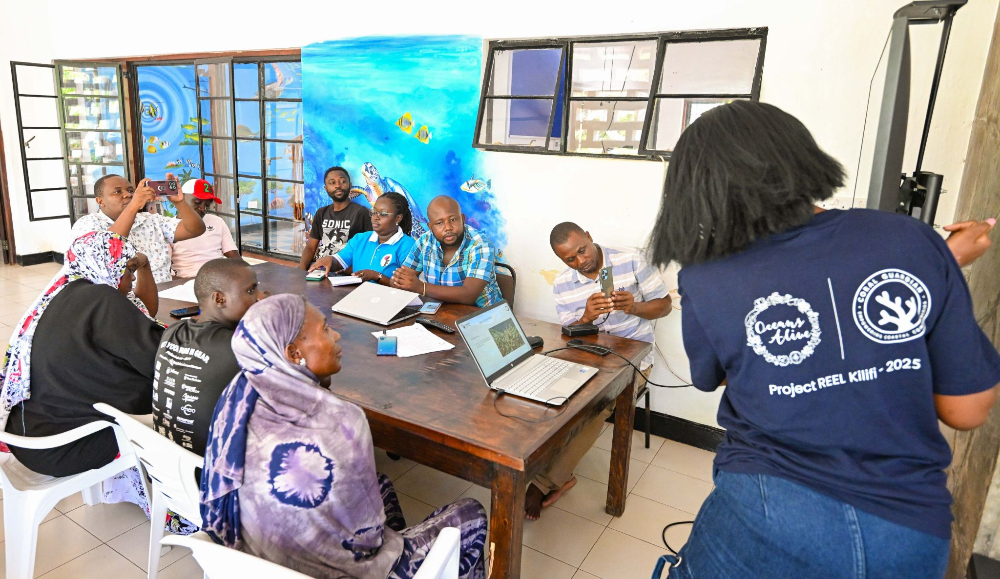
Capacity Building & Training
Marine governance, protected area management and ecological monitoring training. Building the human infrastructure that makes conservation last beyond project cycles.
Learn More
Community Health & Wellbeing
Holistic programmes that link ocean health directly to community health — because the wellbeing of Kilifi's people and the health of its waters are inseparable.
Learn More
Research & Monitoring
Ecological baselines, fish biomass surveys and coral cover assessments. The evidence base that underpins every programme and every policy recommendation OAF makes.
Learn More